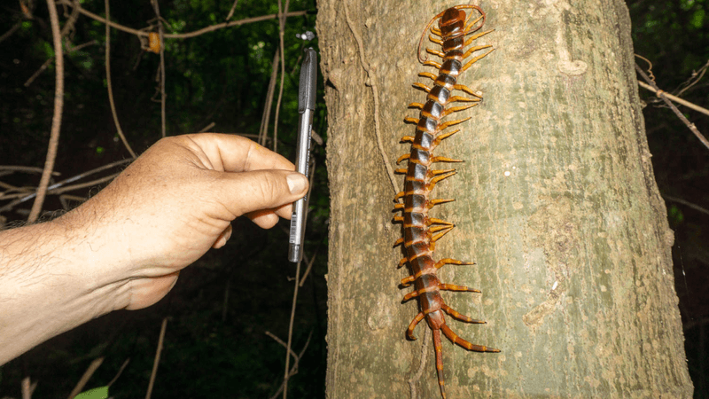

-Centipedes name in latin is called "100 feet"
-Centipede are nightowls and usually hunt during the night and are rarely seen in the day unless you look under any moist rocks
-Their life span can go up to 5-6 year
-There are up to 3,000 known species of centipedes in the world
-Centipedes have poor eyesight
-Millipede name in latin is called "1,000 feet"
-They breath through tiny holes called the spiracles that is all over their bodies, if they get too wet they can drown
-They are harmless to humans but some speices can damange younge plants by eating their roots and stems
-They lay their eggs in a nest, the mother would a burrow in the soil which is where teh eggs are nested
 Back
Back